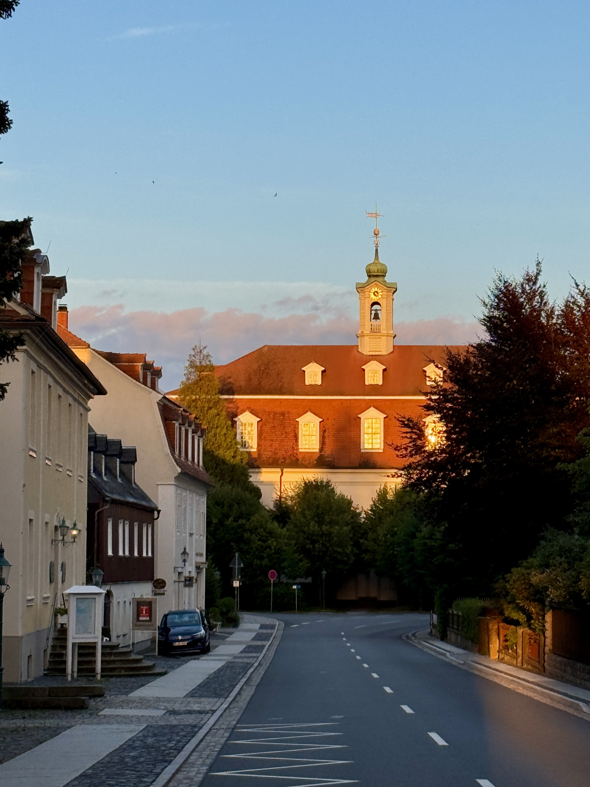
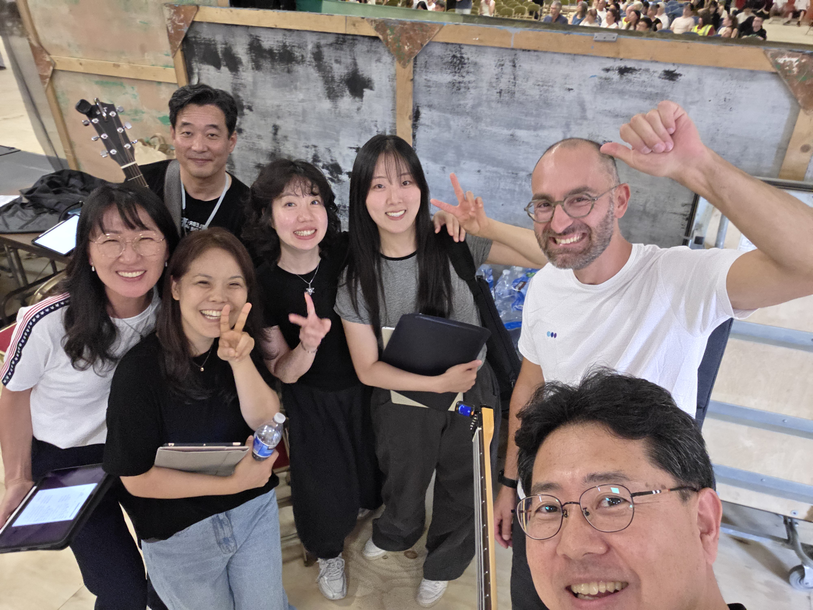
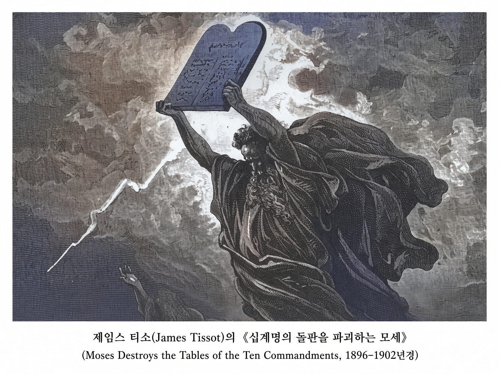

사랑하는 동역자님께 주님의 평안을 전합니다.
내 아버지의 집과 품 안에서
지난달에는 독일 모라비안 공동체의 헤른후트(Herrnhut)에서 72시간 예배에 참여했습니다. 그런데, 예배에 필요한 일들을 준비하며 섬기다보니 4일간 건물 밖을 나서지 못했고, 개인적으로는 방문을 고대하던 지역이라는 사실도 잊은 채 예배 안에서 내 아버지의 집과 품에 머물 수 있었습니다. 돌아보면, 비교할 수 없이 더 좋은 곳에 있었던 것이죠.

바로 얼마 전에는 웨일즈에서 7일간 연합하여 예배하는 열방부흥축제에 다녀왔는데, 참여하는 개인과 예배팀들의 모습, 그리고 저의 모습도 함께 돌아보니, 마치 주께서 우리를 광야 한가운데로 부르셔서 예배하게 하시는 것 같았습니다.
여전히 해결되지 못한 문제들로 무거워진 마음과, 7일간의 예배 이후에 대해서도 답을 찾지 못한 상황에서 첫째 날을 맞이하게 된 것입니다. 그런데 예배가 시작되니, 지금 이 순간 우리가 믿음으로 드려야 할 고백이 무엇인지를 선명하게 말씀하시는 듯했습니다.
‘주님, 우리를 광야 한가운데로 초대하셔서 예배하게 하신 것은, 무엇과도 비교할 수 없는 주님의 사랑과 신실하심을 가장 가깝고 선명하게 누리며 경험하게 하시려는 은혜의 섭리임을 고백합니다. 7일간 드려지는 예배 이전과 이후의 모든 삶을 주님께 온전히 맡겨드리며, 두려움과 염려가 아니라 오직 내 아버지의 집과 품 안에서 기쁨과 감사로 예배하겠습니다.’
시편 27:4 “내가 바라는 한 가지”
(아하트 샤알티 Achat Sha'alti)
아하트 샤알티 (Achat Sha'alti, 내가 바라는 한 가지)라는 곡을 처음 알게 된 것이 한 달 남짓이지만 열방부흥축제에서 꼭 불러야겠다 싶었습니다. 다윗의 상황과 고백을 이보다 잘 표현한 곡이 있을까 해서였습니다.
사울왕을 피해 광야와 동굴에 머물던 그 때, 그리고 아들 압살롬의 반역으로 왕궁과 예루살렘을 떠나야 했던 그때에 다윗은 성소에서 멀어져가는 자신의 모습을 슬퍼했지만, 주님의 전을, 그 품을 더욱 사모하여 이렇게 고백하고 노래하였습니다.
[시27:4] 내가 여호와께 바라는 한 가지 일 그것을 구하리니, 곧 내가 내 평생에 여호와의 집에 살면서 여호와의 아름다움을 바라보며 그의 성전에서 사모하는 그것이라.
함께 노래하던 장정은 사모님의 솔로 파트 서두부터 떨리는 음성이어서 잠시 얼굴을 보니, 이미 눈물이 멈추지 않는 듯했는데, 다윗의 모습도 그러했을 것 같습니다.

부흥을 준비하는 삶
시므온과 안나(눅2:25-38)
열방부흥축제 기간에 ‘부흥을 준비하는 삶’에 대해 인터뷰를 하기도 했는데, 두 노인의 모습이 떠올랐습니다. ‘예루살렘을 회복하실 메시야를 기다리는 자’로 여겨진 시므온, 그리고 과부가 된 지 오래인데 메시야를 보기까지 성전을 떠나지 않고 금식과 기도를 드려온 안나.
그들의 일상과 사역과 겪어온 여정들은 성경에 기록되지 않았는데, 더 이상의 설명이 필요치 않기 때문일 것입니다. 부흥을 갈망하여 72시간 예배도, 웨일즈에서의 예배도, 치열한 싸움터 같은 삶의 현장에서 드려지는 모든 순종과 예배도 어쩌면 하나를 위한 것일 텐데,
다시 오실 주님을 고대하여 그 길을 준비하는 것이고, 신랑을 맞이하려는 신부가 자신을 아름답게 단장하는 여정일 테니까요.
테슈바
(תשובה/돌이킴, 회개)
8월 14일부터 9월 21일은 “테슈바(תשובה/돌이킴, 회개) 기간”으로 지켜지기도 하는데, 유대력 엘룰월(Elul) 1일부터 대속죄일(Yom Kippur)까지 이어지는 40일간의 회개 기간입니다. 이 전통의 뿌리는 출애굽기로 거슬러 올라가는데,
이스라엘 백성이 금송아지를 만들어 범죄한 뒤 모세가 첫 번째 돌판을 깨뜨렸고, 다시 시내산에 올라가 두 번째 돌판을 받기까지 40일간 하나님 앞에서 금식하며 중보기도를 드렸는데,(출34:4, 34:29) 바로 지금이 그 기간이 시작되는 때입니다.

[잠28:13] 자기의 죄를 숨기는 자는 형통하지 못하나 죄를 자복하고 버리는 자는 불쌍히 여김을 받으리라. 는 말씀과 함께 시편 27편, 51편을 함께 묵상한다면 깊은 회복의 은혜가 있으리라 믿습니다.
지난 한 달 동안도 믿음과 사랑으로 이곳 기도의 집 여정에 동행해주셔서 깊이 감사를 드립니다.
*아래 영상은 열방부흥축제 마지막 날 예배팀 리더들이 함께 무대에 올라 시편 133편 히네마토브(Hine Mah Tov/보라, 얼마나 선하고 좋은가)를 부르는 모습입니다.